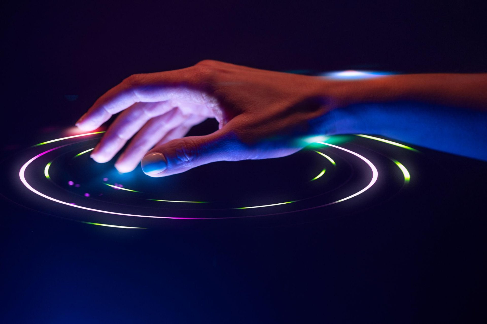
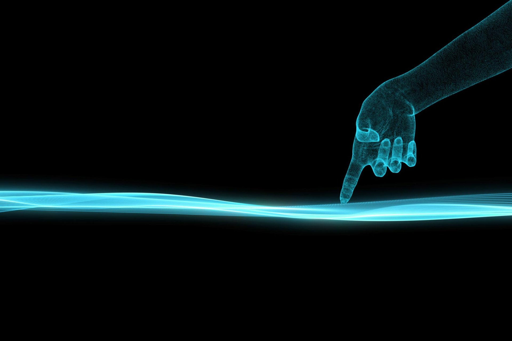
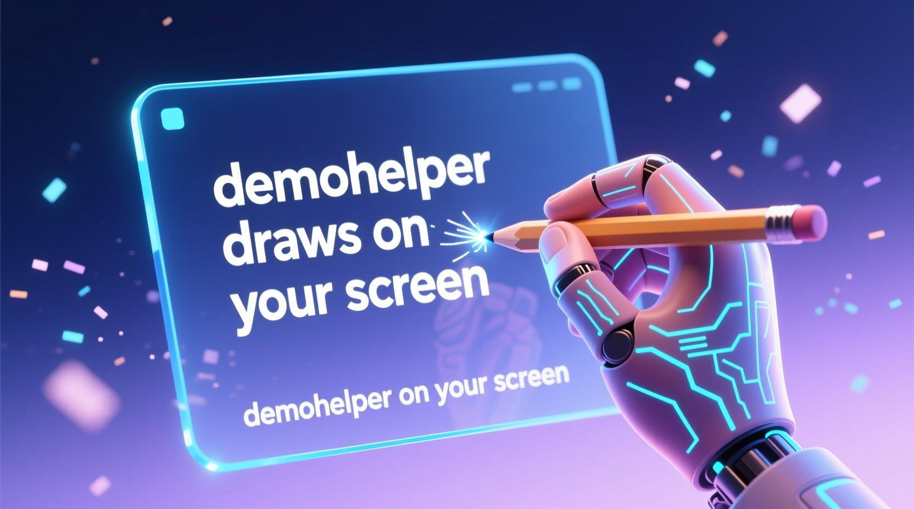
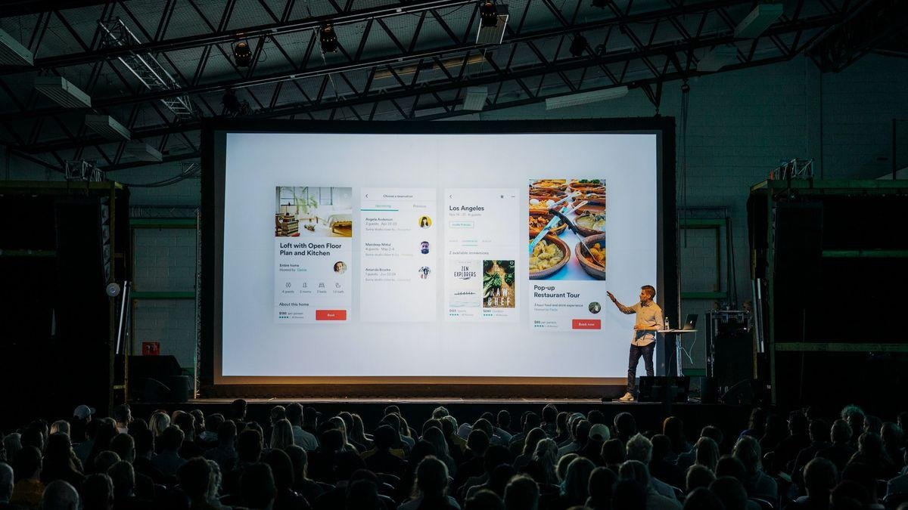

所有手势在统一的状态机里协调，互不打架、不会误触。
拇指与食指捏合即落笔，空中书写、圈划、标注，线条经 1€ 滤波平滑。
红色光点常驻跟随食指指尖，演讲指引焦点，无需额外激光笔。
食指+中指伸出（剪刀手）水平挥动即翻页，适配 PPT / WPS / PDF 放映。
五指收拢成拳一键清屏，快速进入下一段讲解。
站在台上来回走，手一挥就翻页，目光不必回到键盘。
屏幕即黑板，圈重点、画流程，讲解更直观。
临时草图、思维导图，随手就画，随时清屏。
视频会议中隔空指向与标注，对方看得更清楚。
纯本地实时管线，无云端往返，低延迟。
为了解决「画不直、翻不稳」，我们做了这些事。
降低最小截止频率并修复重锚跳变，捏合绘画的直线抖动显著下降，移动跟手度不受影响。
为中指设置独立阈值、进入侧 350ms 连续丢失容忍，剪刀手在临界 curl 值附近不再频繁命中/掉线。
绘画 / 翻页 / 清屏由统一协调器仲裁，翻页期间自动挂起捏合并隐藏激光，互不打架。
Swift 原生实现，事件直达系统，无需浏览器插件或外部服务。

无需触碰，指尖即指令。
虽然完整手势识别在 macOS 客户端，但你可以在这里先感受「落笔—平滑—清屏」的交互。
下方为产品概念示意与真实使用场景，演示录屏区待替换为实拍 mp4。

捏合绘画 · 概念示意
演讲翻页 · 真实场景HandMark 当前以 GitHub Release 形式分发 macOS 原生应用，开箱即用、纯本地运行。
在仓库 Releases 页下载 HandMark.app 即可体验全部手势。
（具体下载地址与版本说明以作者发布页为准；本页为 1024 造物挑战参赛展示页。）